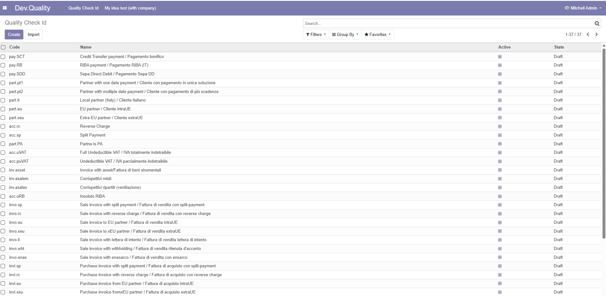

Migration and backporting test suite
Suite per test migrazione


This module has no specific function for End-user, it is just designed for Odoo developers.
This module aims to show the differences among different Odoo versions
See development differences among Odoo version
This module was developed for Odoo 12.0; next module versions was automatically migrated by arcangelo. You can find previous module version backported by arcangelo.
Questo modulo non ha una precisa utilità per l'utente finale; è stato progettato per l'utilizzo degli sviluppatori.
Questo modulo è orientato a mostrare le differenze di sviluppo tra le varie versioni di Odoo.
Vedere development differences among Odoo version
Questo module è stato sviluppato per Odoo 12.0; le versioni successive sono state migrate automaticamente tramite arcangelo. Ci sono anche versioni precedente portate all'indietro con arcangelo.
Authors | Autori:
Contributors | Partecipanti:
This module is maintained by the SHS_AV s.r.l..
This module is part of zerobug-test project.
Published information on | Informazioni pubblicate: 2025-07-19